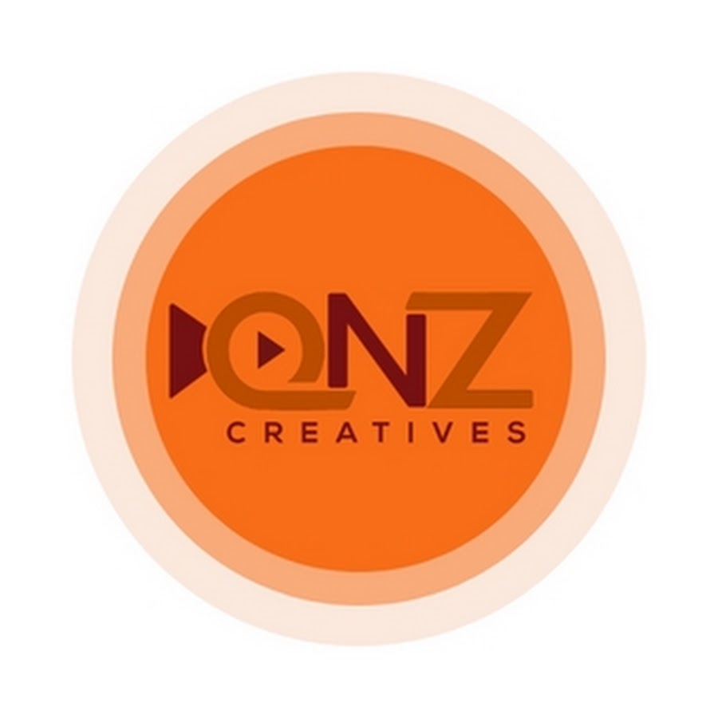

About the Company
The company where I completed my internship was QnZ Creatives. Before showcasing my video editing work and internship experience, I would like to briefly introduce the company and the type of work I was involved in during my internship.
QnZ Creatives was officially established in 2019. The company focuses on providing creative marketing services, particularly Video Marketing and Content Marketing, through social media platforms such as Facebook, Instagram, and TikTok.
QnZ Creatives provides Video and Content Creator services to help entrepreneurs and businesses produce engaging and high-quality marketing content. The company has a professional and productive team that utilizes current technology and creative approaches to meet clients' marketing needs. The company also focuses on continuously improving the quality of its work, encouraging creativity and innovation, and delivering competitive marketing services.
My Role and Experience During Internship
During my internship at QnZ Creatives, I was mainly involved in video content production and video editing. I had the opportunity to work on different types of marketing videos, which included Motion Graphics, Spokesperson videos, and Voice Over videos.
For some of the Voice Over videos, I used my own voice to deliver the narration. I was also involved in preparing some of the video scripts, where I developed the script myself based on the product, target audience, and purpose of the video.
Besides video editing and production, I also participated in managing and preparing props needed for video shoots. On certain occasions, I also used my own hands as the talent for product demonstrations, such as opening product packaging, holding products, and demonstrating how the products are used.
Another responsibility I handled was assisting with the company's content posting schedule. This gave me experience in organizing video content and managing when different pieces of content should be published on social media platforms.
In addition to video-related tasks, I was sometimes given the opportunity to prepare company posters and presentation slides. These tasks allowed me to further develop my skills in visual design, content presentation, and creating materials that are suitable for professional and marketing purposes.
You can clik the button below to view some of the work I produced and the skills I developed throughout my internship.